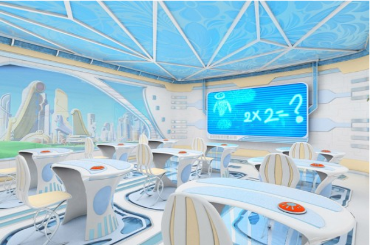

Szerintem a jövő iskolájában több érdekes dolgot tanulunk, amit tényleg lehet használni az életben. Szerintem minden tantárgy digitális lesz. Nem lesz annyi dolgozat, inkább közösen csinálunk feladatokat. Többet lehet majd beszélgetni órán, nem csak csendben ülni.

Készítette: Németh Dorián